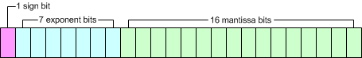

The vertex shader has the following resources.
Program RAM is the region where the assembler instruction code is stored.
It can hold 512 instructions. If 513 or more instructions are coded in the assembler file, an error will occur at assembly time or at link time.
The following types of registers are used for operations and flow control.
| Name | Identifier | Number of components | Number | R/W | Index | Bit width |
|---|---|---|---|---|---|---|
| Input registers | v# | 4 | 16 | R | - | 24 |
| Temporary registers | r# | 4 | 16 | RW | - | 24 |
| Floating-point constant registers | c# | 4 | 96 | R | a0/aL | 24 |
| Address register | a0 | 2 | 1 | RW | - | 8 |
| Boolean registers | b# | 1 | 16 (see below) | R | - | 1 |
| Integer registers | i# | 1 | 4 | R | - | 24 |
| Loop counter register | aL | 1 | 1 | R | - | 8 |
| Output registers | o# | 4 | 16 | W | - | 24 |
| Status registers | - | 1 | 2 | RW | - | 1 |
The Number 15 Boolean register (b15) is reserved for the geometry shader.
Input registers, temporary registers, and floating-point constant registers are registers of the floating-point type.
Here, floating point numbers are 24-bit values consisting of 1 sign bit, 7 exponent bits, and 16 mantissa bits.
The sign part takes 0 for positive and 1 for negative.
The exponent part is expressed as a base 2 value biased by 63.
The mantissa (fractional) part stores [mantissa -1].
The actual value is:
(-1) ^ (sign) × 2 ^ (exponent - 63) × (1 + mantissa)
.

These are floating-point registers.
Store vertex attribute data. (The attribute values used in OpenGL ES 2.0 applications.)
These are floating-point registers.
These are reusable registers for temporarily holding the results of calculations. The contents of the register are maintained until overwritten.
These are floating-point registers.
They store constants used in operations. They store the uniform values used in OpenGL ES 2.0 applications.
The address register is for integers from -95 to 95. You can assign just the integer part of the value of a floating-point register.
Behavior is undefined if you assign a value that is outside the range of [-95, 95].
You can use the register value to specify a register number.
See Offsetting the Input Operand Register Index.
These are registers of the Boolean type. These are used for branching and jumping.
They store the uniform values used in OpenGL ES 2.0 applications.
The Number 15 Boolean register (b15) is reserved for the geometry shader.
These are registers of the integer type. Integer registers are used for controlling loop instructions.
They store the number of loops, the initial value of the loop counter register and the increment value of the loop counter register. They are 24 bits wide. Bits 0-7 specify the number of loops, bits 8-15 specify the initial value of the loop counter register, and bits 16-23 specify the increment value of the loop counter register.
When the process enters a loop instruction, the loop counter register is initialized to this register's initial value, and the assembler instructions from the loop instruction to the endloop instruction are executed repeatedly for [the number of loops specified by this register + 1]. (If the number of loops as specified by this register is 0, then the instructions are executed only once.)
For each loop, the loop counter register increases by the number specified for the increment value of this register.
This register stores the uniform values used in OpenGL ES 2.0 applications.
Stores the counter values for loop instructions. Can store values in the range of -128 to 127.
As with address registers, you can specify a register number.
See Offsetting the Input Operand Register Index.
Outputs the data after processing by the vertex shader for later stages in the graphics pipeline.
These registers are used for conditional branching on values set by comparison instructions.
CONFIDENTIAL